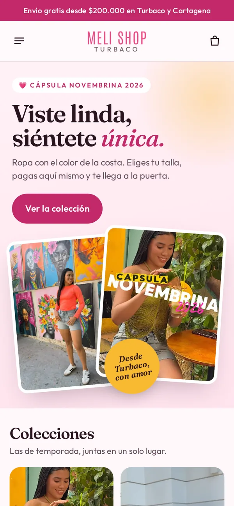
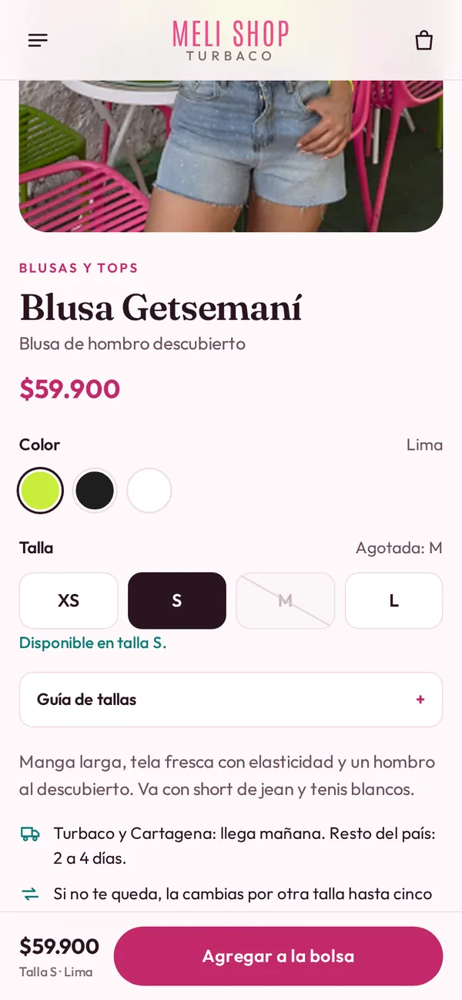
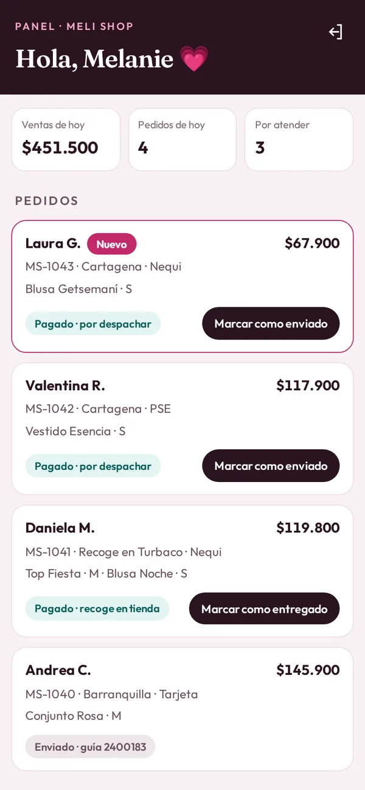

Hoy cada venta pasa por una conversación: reenviar la foto, confirmar la
talla, enviar el número de Nequi y esperar el comprobante. La tienda
muestra la colección con sus tallas, cobra en línea y le entrega el
pedido listo para despachar.
Qué se construyeTienda y panel
PlazoCinco semanas
Descuento25 %
Inversión$ 2.445.000
02 Qué incluye
Para sus clientas
Catálogo por categoría y por colección de temporada
Tallas y colores con existencias propias; la agotada no se puede pedir
Cuatro formas de entrega, cada una con la tarifa que usted defina: recoger en Turbaco sin costo, domicilio en Turbaco, domicilio en Cartagena y envío nacional por transportadora
Pago con Nequi, PSE, Bancolombia o tarjeta, sin enviar comprobantes
O el pedido ya escrito por WhatsApp
Aviso cuando sale el pedido, con el número de guía
Para usted, el panel
Publicar, editar y ocultar prendas, con fotos y precios
Existencias que se descuentan solas con cada venta
Aviso cuando una talla está por agotarse
Pedidos con su estado; al despachar, registra el número de guía y la clienta recibe el aviso
Tarifas de envío y monto para envío gratis



Ejemplo con fotos de su Instagram; nombres, precios y tallas de ejemplo.
Usted publica una prenda con sus tallas y la ve en la tienda, desde un enlace privado
Semanas 1 y 2
2 · Compra y pago
Una compra de prueba, de principio a fin, llega a su panel
Semanas 3 y 4
3 · Publicación
La tienda queda en su dominio, con hasta cincuenta prendas cargadas, y recibe pagos reales
Semana 5
El plazo comienza cuando la lista de prendas y sus fotos estén completas;
la fase 1 puede avanzar con las primeras diez.
04 Inversión
Inversión total · con el 25 % de descuento$ 2.445.000
Antes $ 3.260.000 · ahorro de $ 815.000 · pesos colombianos
Concepto
Qué incluye
Valor
Tienda virtual
Catálogo, bolsa de compras, pago en línea, envíos y panel
$ 2.500.000
Tallas y colores
Existencias propias por talla y por color
$ 250.000
Pedido por WhatsApp
El pedido llega ya escrito, además del pago en línea
$ 80.000
Identidad de la tienda
Paleta y tipografías a partir de su logo
$ 180.000
Dominio, alojamiento y base de datos
Primer año, a su nombre: la dirección de la tienda, el servidor y la base de datos de prendas, clientas y pedidos
$ 250.000
Subtotal
Valor de lista
$ 3.260.000
Descuento del 25 %
Promoción vigente
− $ 815.000
Total
Cinco semanas
$ 2.445.000
Forma de pago
Al aprobar
$ 1.222.500
Comienza la fase 1.
Contra publicación
$ 1.222.500
Con la tienda publicada y aprobada por usted.
Desde el segundo año
$ 290.000
Al año: dominio, alojamiento, base de datos y mantenimiento. Sin mensualidad ni comisión por venta.
Opcional, aparte del total
Qué es
Para qué sirve
Valor
Envíos con Envia
En lugar de tarifas fijas y guía manual: la tarifa real de la transportadora se calcula al pagar y la guía se genera desde el panel. Cada envío lo cobra Envia, en su cuenta
$ 250.000
Cupones y descuentos
Códigos y precio tachado en temporada de ofertas
$ 150.000
Recuperación de compras
Recordatorio a quien dejó la compra a medias
$ 300.000
Correo con su dominio
pedidos@ su dominio, en lugar de Gmail
$ 150.000
Facturación electrónica
Factura automática ante la DIAN, si el negocio está obligado
$ 700.000
Alcance de la propuesta
Incluye
Diseño propio con la identidad de Meli Shop
Seis páginas, pensadas primero para el celular
Carga inicial de hasta cincuenta prendas
Certificado de seguridad y copias de respaldo
Capacitación y treinta días de ajustes sin costo
No incluye
Cuenta y comisiones de la pasarela de pago
Empaque, despacho y transportadora
Fotografía de producto
Publicidad en redes
El descuento aplica a los cinco conceptos; opcionales y renovación van
a valor de lista. El dinero de las
ventas llega directo a la cuenta de Meli Shop; JV Agencia no cobra
porcentaje sobre ellas. No se cobra IVA: el emisor es no responsable de IVA.
05 Para comenzar necesito de usted
El logo en la mejor calidad disponible
La lista de prendas con precio, tallas, colores y existencias; le envío la plantilla
Las fotos originales de cada prenda
Las tarifas de envío y su política de cambios
El número de WhatsApp de pedidos y el dominio que prefiere
La cuenta en la pasarela de pago, a nombre del negocio; le acompaño en el proceso
Para comenzar,escríbame por WhatsApp →
y ese mismo día le envío la plantilla de prendas; con ella inicia la fase 1.